About
Vine Venture was my final university project. I developed the concept together with Nicola Zamboni, we made a first prototype for the End of Year Show, where it received an incredible feedback. As a result, we were given a patronage from the University of Arts London, to proceed the development of the game. The game forgone further 4 months of development at the university. Currently the game is under development, and you can play it at some gaming shows.
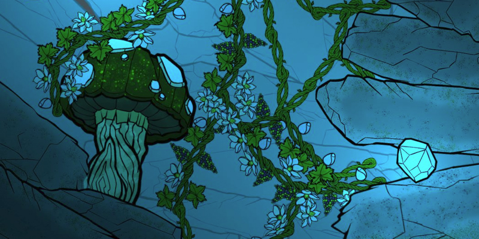
Core Design
The game concept was initially based on building a tall sky scraper, from given shapes – in Tetris-like fashion, with progression player would have to deal with weather and physics. As we begun discussing the design, we changed our idea to a tree, that would use resources from the ground(roots) to grow as tall as possible. As the design went along we realising that growing a tree into any given direction was more rewarding and novel. At that point our tree begun looking more like a vine, hence we changed our design, now the player could grow into any direction and explore the map at their own pace – at this point the game had a title – Vine Venture.
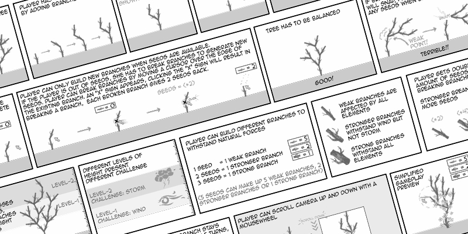
Prototyping
The game has forgone 4 major prototyping stages. The initial build was made in Adobe Flash (now Adobe Animate), where I explored the building mechanic, and how it would feel to stem vines. Once we settled for a feel, I begun developing a new prototype in Unity where I explored how the concept worked together with physics, once we settled for the initial feel for physics, I focused on making a game prototype, adding different mechanics and game objects, this was the version that was shown at the end of year show 2014. After the summer, we started working on the project full time, I had so many improvements and ideas that I wanted to add, that it made sense to build a brand new version of the game. (One of the major reasons, was a stemming mechanic, we changed our design to comply with touch screen devices, and It came out much cleaner and easier to work with, because we already had our design worked out, it was a matter of putting everything in order.
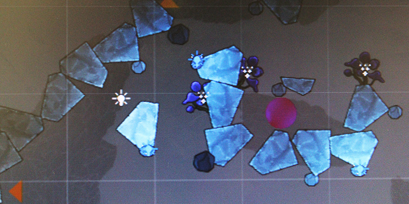
Future
We would like to publish Vine Venture on Steam, and later on on iOS and Android. Right now you can find us at shows, and give us your feedback!
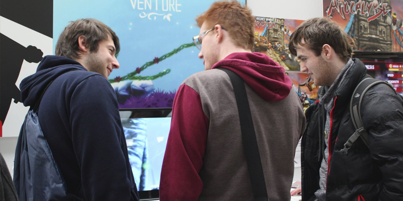
Social
Facebook - facebook.com/VineVenture
Twitter - twitter.com/VineVenture
Follow @VineVenture
More - on my blog
Development files
click to change zoom
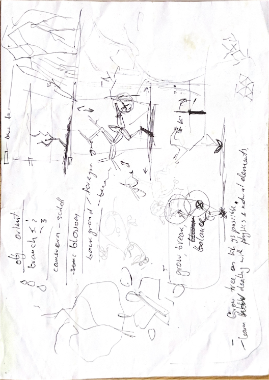
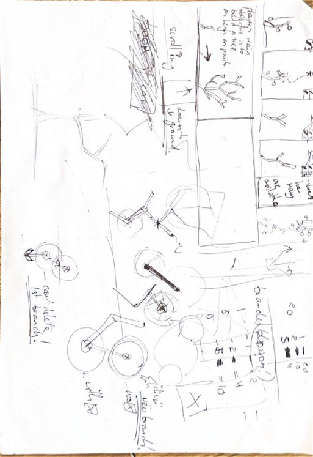
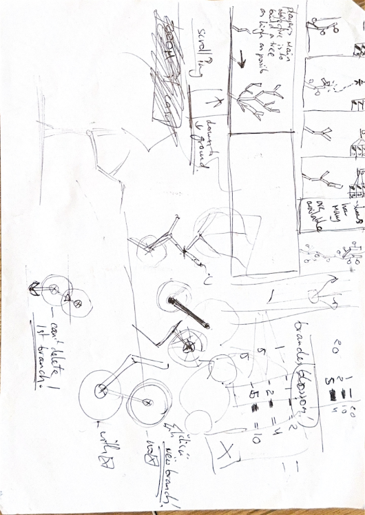
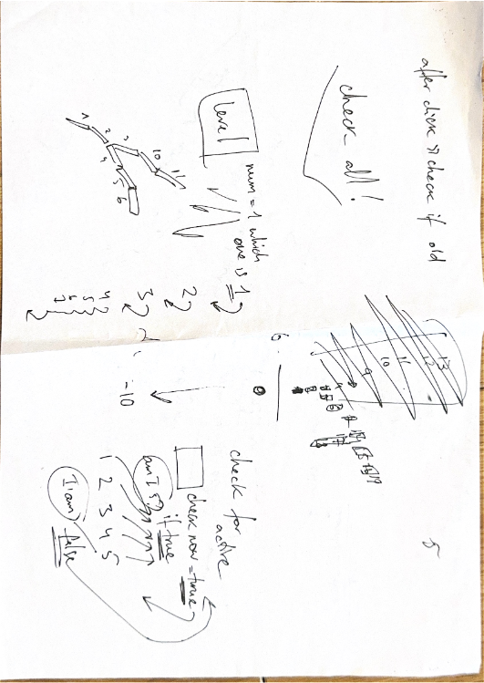
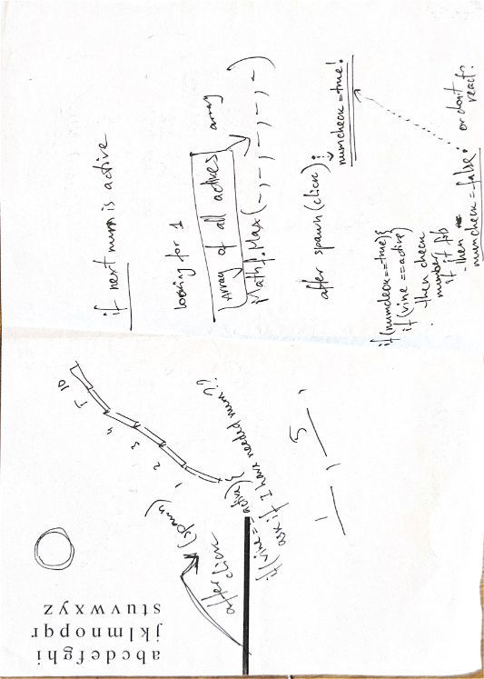
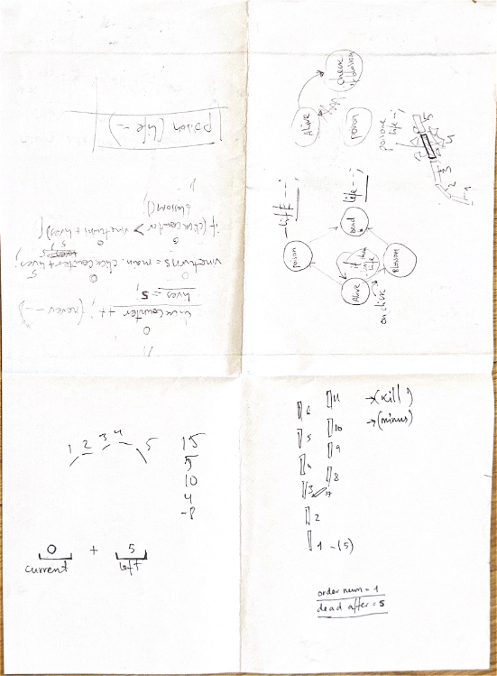
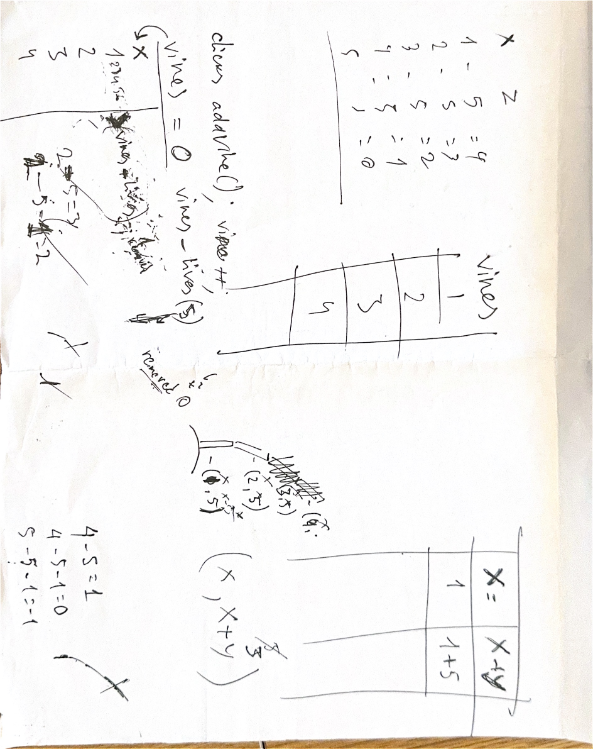
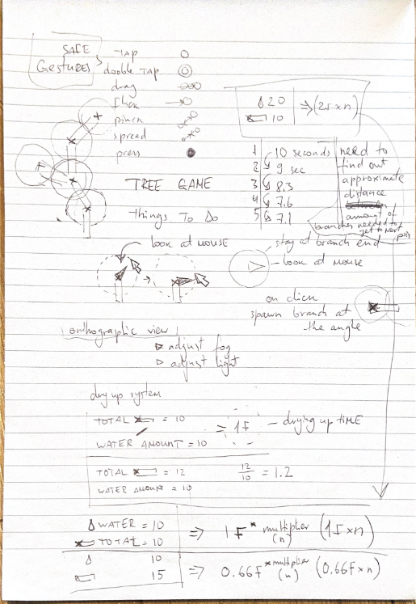
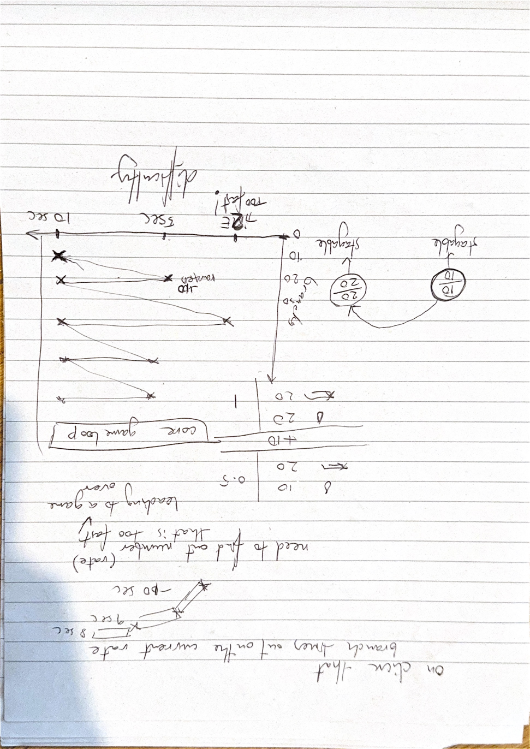
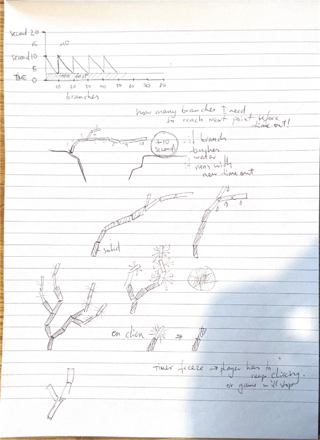
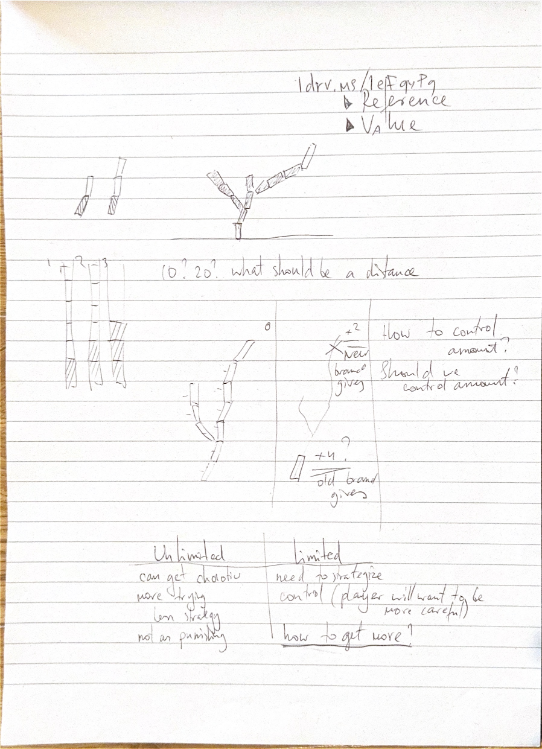
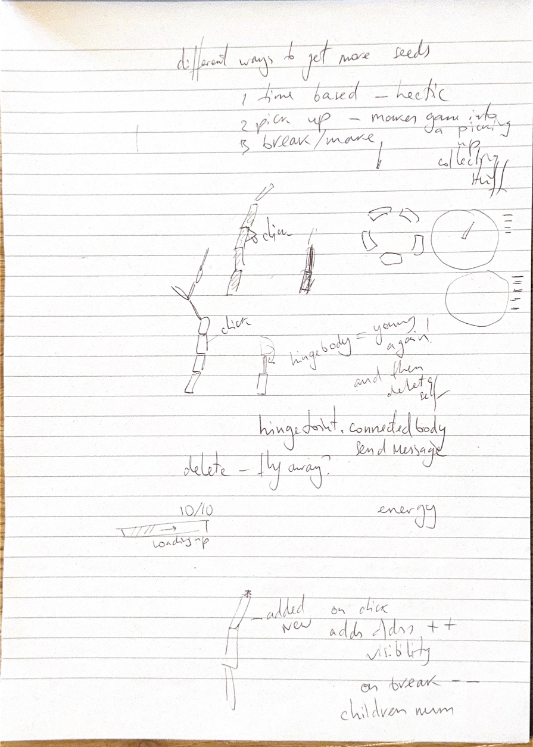
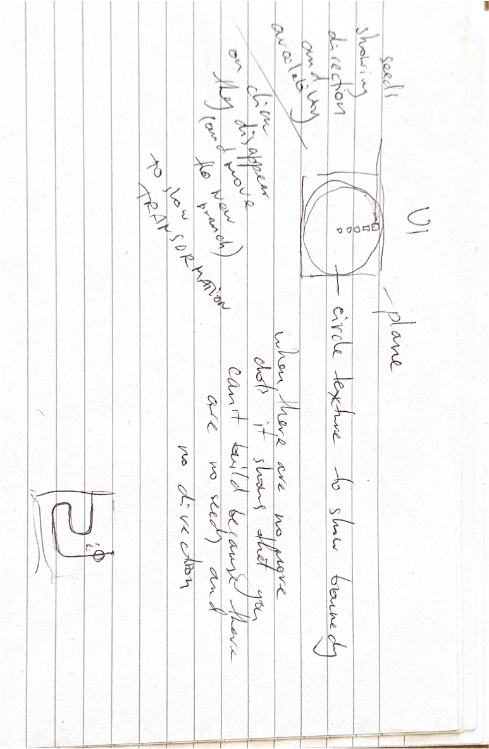
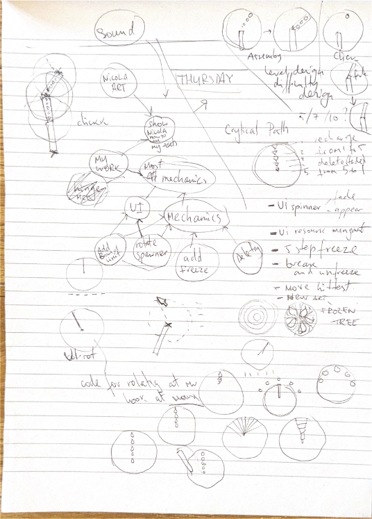
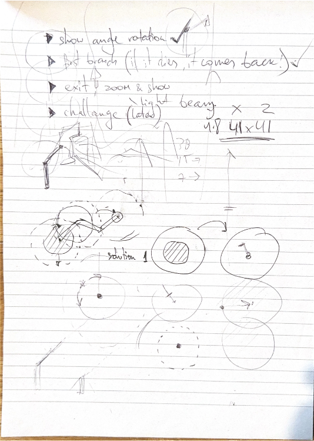
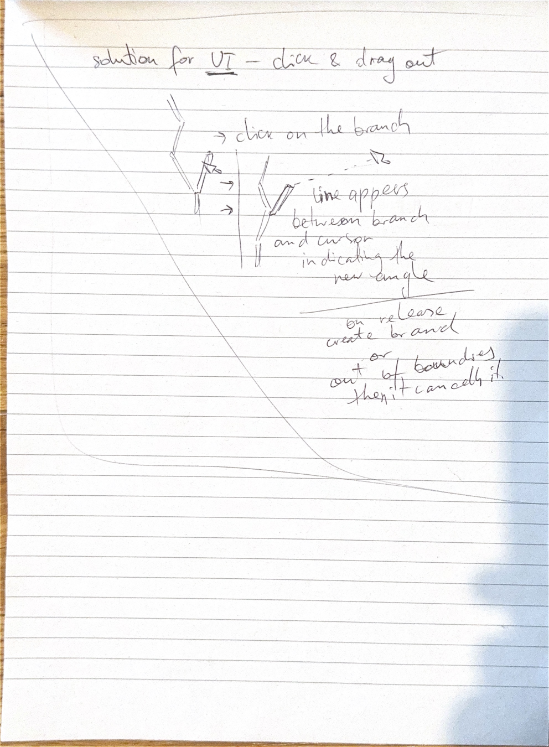
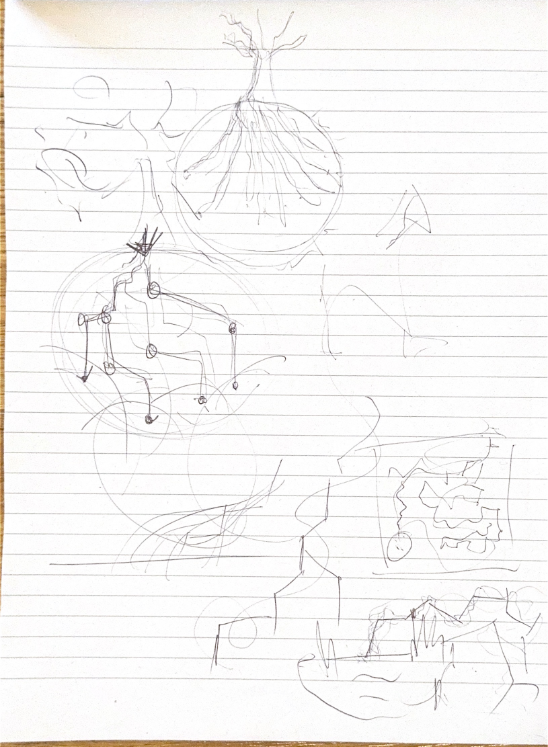